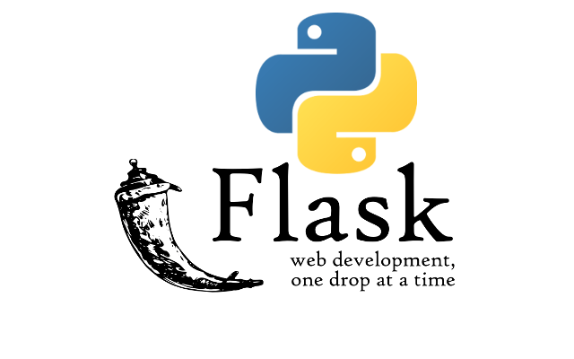

System Documentation

We are using flask python API to store and combine out python and html elements with our phishing detection system
Using a Flask API to serve a machine learning model offers several key advantages. First, it separates concerns by keeping the model logic—such as training, feature processing, and predictions—independent from the frontend, allowing developers to update either without affecting the other. It also makes the model accessible to any client capable of sending HTTP requests, including web apps, mobile apps, or other Python programs, effectively turning the model into a service. This approach improves scalability, as the API can handle multiple users, be deployed in the cloud, and load-balanced to manage high traffic. Security is enhanced because the raw model and its code remain on the server, while the API can validate inputs, rate-limit requests, and control outputs. A Flask API adds flexibility by allowing multiple model versions to be served simultaneously, enabling experimentation and A/B testing without changing the frontend. Additionally, it accelerates prototyping since the frontend can quickly send requests and receive predictions in real time. Finally, it maximizes reusability, as the same API can serve multiple applications, including dashboards, mobile apps, or browser extensions, making the system modular, maintainable, and efficient.
Key Features
- Application programming interface using the Flask web Framework
- Lightweight and flexible framework for python
- Handles HTTP request and response
- works with scikit-learn, TensorFlow
- built-in server for testing
- Minimal Setup and easy to understand
- Flexible: Can integrate with databases, authentication, ML models
- Lots of extensions
- We can connect databases using SQL
In Python, Pickle is a tool that lets you save things like a trained machine learning model to a file and then load it back later without having to retrain it. For a phishing detection system, this is really useful because training the model to recognize phishing websites can take a long time. Once you train the model, you can use Pickle to “freeze” it and save it. Later, when someone uses your web app to check a URL, your Flask API can quickly load the saved model from the file and make predictions instantly. This way, your model is easy to reuse, and your system can give results fast without needing to start the training process every time.
Key Features
- Supports complex objects: Can handle custom classes, functions and nested data structures
- Persisten Storage: Allows savingg objexts to files for later use
- Data Transfer: Enables sending Python objets over a network or between processes
- Serializes Python Objects: Converts Python objects (lists, dictionaries, classes, etc.) into a byte stream.
- Deserializes Python objects: Reconstructs Python Objects from a byte stream back into memory
Why it is important
Consistenty in preprocessing
-Ensures the TF-IDF (Term Frequency-Inverse Document Frequenct) vectorizer used in training is exactly the same when we load our model for use.
Protability
-Pickled objects can be loaded on another machine, or deployed in a web app or API
Supports complex Python objects
-Pickle saves the raw data the email data is turned into data the model understands

- Version control – keeps track of all changes to code over time.
- Collaboration – allows multiple developers to work on the same project simultaneously.
- Backup – stores code in the cloud so it’s safe from local hardware failures.
- Code review – makes it easy to review, comment on, and approve changes.
- Issue tracking – helps organize bugs, tasks, and feature requests.
- Continuous integration – integrates with tools to automatically test and deploy code.
- Portfolio & visibility – showcases projects publicly for employers or collaborators.
- Open-source contribution – allows developers to contribute to other projects.

Using HTML and CSS with Flask is beneficial because HTML provides the structure of your web pages, while CSS controls their appearance and styling. This allows you to create a user-friendly and visually appealing interface for your Flask application, such as a phishing detection dashboard. By combining Flask with HTML and CSS, you can easily serve dynamic content from your Python backend while keeping the frontend organized and attractive.